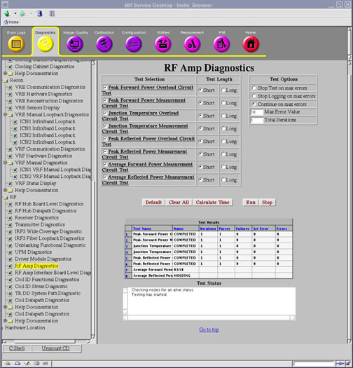

Proprietary to General Electric
Direction 5670000, Rev# 1
Optima MR450w 1.5T Service Methods
Module Version 2.0, Version Date 8/19/08
Proprietary to General Electric |
Diagnostics >> System Function >> RF >> RF Amp Diagnostics
Diagnostics >> Hardware Location >> PGR Cabinet >> RF >> RF Amp Diagnostics
Illustration 1: RF Amp Diagnostics

This set of diagnostics tests the internal measurement and overload circuits in the 3.0T XRFD amplifier. These circuits monitor the power and thermal stresses at various points inside the amplifier.
The proper operation of these circuits ensures that the amplifier is:
Capable of accurately measuring the power or thermal parameters.
Capable of tripping a fault (reporting an error) if the safe operating limits are exceeded.
There are four RF power modules in the amplifier and one output combiner module. Each diagnostic test covers the multiple circuits of that type on any of the five modules. These tests are useful in determining if frequent errors of the types listed below are due to faulty monitoring circuits.
Peak Forward Power Overload Circuit Test - This test exercises the circuits that will trip a fault if the peak forward power level at the monitored point exceeds the pre-set thresholds. Faulty circuits of this type could produce frequent 24, 25, 26, 27 or 30 XRFD errors with no other identifiable root cause.
Peak Forward Power Measurement Circuit Test - This is a test of the measurement circuits that are used in conjunction with the peak forward power overload circuits to report the levels seen at the time of the trip.
Junction Temperature Overload Circuit Test - This test exercises the circuits that will trip a fault if the RF device junction temperature level at the monitored point exceeds the pre-set thresholds. Faulty circuits of this type could produce frequent 2C, 2D, 2E or 2F XRFD errors with no other identifiable root cause.
Junction Temperature Measurement Circuit Test - This is a test of the measurement circuits that are used in conjunction with the RF device junction temperature overload circuits to report the levels seen at the time of the trip.
Peak Reflected Power Overload Circuit Test - This test exercises the circuits that will trip a fault if the peak reflected power level at the monitored point exceeds the pre-set thresholds. Faulty circuits of this type could produce frequent 28, 29, 2A, 2B or 3F XRFD errors with no other identifiable root cause.
Peak Reflected Power Measurement Circuit Test - This is a test of the measurement circuits that are used in conjunction with the peak reflected power overload circuits to report the levels seen at the time of the trip.
Average Forward Power Measurement Circuit Test - This test exercises the circuits that measure the total average forward power in Head or Body mode and will trip a fault if the average power level at the monitored point exceeds the pre-set thresholds. Faulty circuits of this type could produce frequent 31 or 32 XRFD errors with no other identifiable root cause.
Average Reflected Power Measurement Circuit Test - This test exercises the circuits that measure the total average reflected power in Head or Body mode and will trip a fault if the average power level at the monitored point exceeds the pre-set thresholds. Faulty circuits of this type could produce frequent 33 or 34 XRFD errors with no other identifiable root cause.
3.0T XRFD Amplifier – These tests focus on the RF power and output combiner modules internal to the amplifier.
None
Select the desired test from the RF Amp Diagnostics screen.
Click [Run].
Ensure that the diagnostic passes by reviewing the status in the Test Results table.
This diagnostic has either a passed or failed status. If the diagnostic has failed, please review the error log and corresponding extended error message for subsequent actions.
In the event that the diagnostic reports a timeout, the diagnostic may not have been executed. Retry the test. If it continues to time out, complete a TPS Reset and then retry the test.